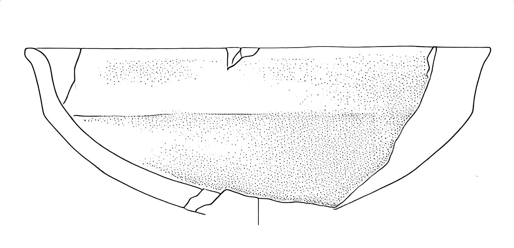
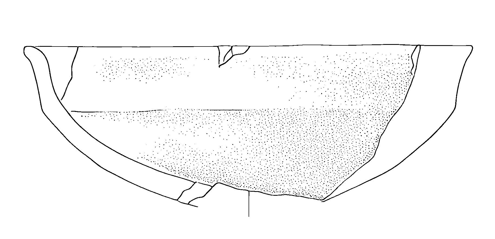
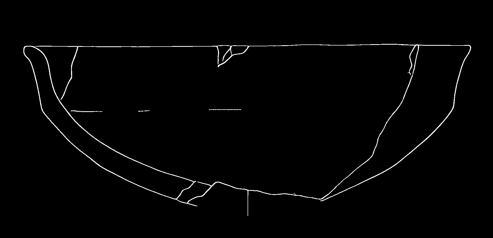
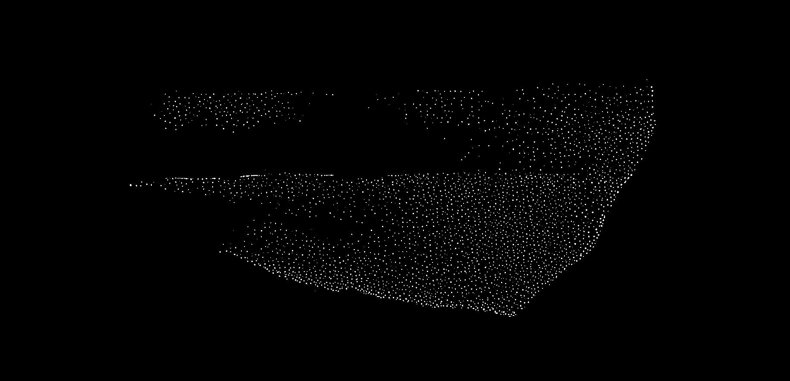
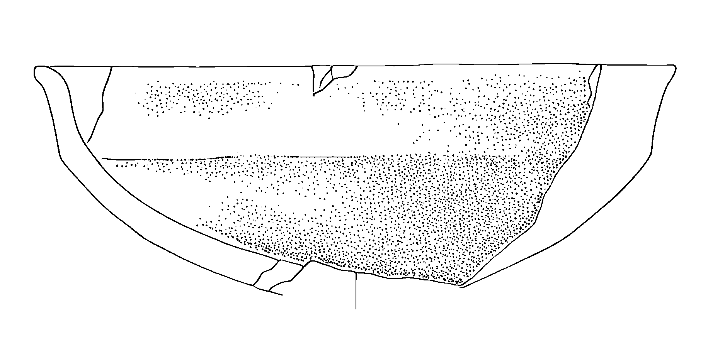
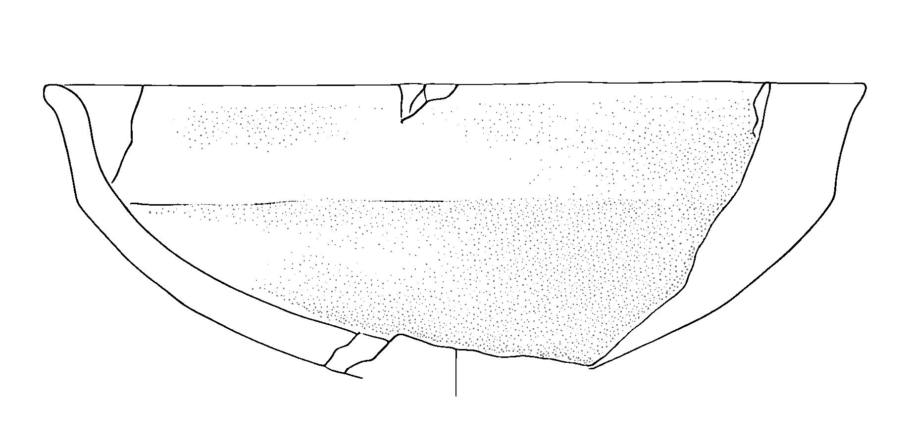
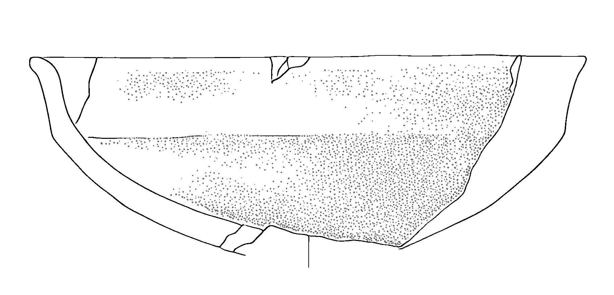

PyPotteryLens: Post-Processing Tools for Archaeological Drawings
Introduction
After generating inked versions of archaeological drawings, we often need to refine the results to meet some publication requirements or enhance the result. The post-processing module provides tools for image binarization, background removal, and stippling pattern enhancement. This guide will walk you through the main functions and best practices for using these tools.
Required Libraries
Let’s start by importing the necessary functions:
from postprocessing import (
binarize_image,
remove_white_background,
process_image_binarize,
binarize_folder_images,
enhance_stippling,
modify_stippling,
control_stippling
)Binarization and Background Removal
For many publication contexts, we want to remove the white background to create binary transparent images that can be easily integrated into figures:
# You can combine binarization and background removal in one step:
processed_image = process_image_binarize(
image_path="path/to/image.jpg",
binarize_threshold=127,
white_threshold=250,
save_path="output.png" # Must use PNG to preserve transparency
)Here the result:


Batch Processing
When working with multiple drawings, you can process an entire folder at once:
binarize_folder_images(
input_folder="path/to/drawings",
binarize_threshold=127,
white_threshold=250
)This creates a new folder with “_binarized” suffix containing processed images
Advanced Stippling Control
By using the post-processing module you can enhance and modify stippling patterns, check out this example!
Enhancing Stippling Patterns
First, we can isolate and enhance existing stippling patterns:
# Separate the main drawing from stippling patterns
processed_img, stippling_pattern = enhance_stippling(
img=Image.open("drawing.png"),
min_size=80, # Minimum size of dots to preserve
connectivity=2 # How dots connect to form patterns
)The function returns two images:
- processed_img: Main drawing without small dots
- stippling_pattern: Isolated stippling pattern


Modifying Stippling
Once we’ve isolated the stippling patterns, we can modify them in several ways:
modified_image = modify_stippling(
processed_img=processed_img,
stippling_pattern=stippling_pattern,
operation='dilate', # Options: 'dilate', 'fade', or 'both'
intensity=0.5, # Controls strength of dilation (0.0-1.0)
opacity=1.0 # Controls darkness of stippling (0.0-1.0)
)The operation parameter offers three different modification approaches:
- ‘dilate’: Makes dots larger while maintaining their density
- ‘fade’: Adjusts the opacity of dots without changing their size
- ‘both’: Combines dilation and opacity adjustments
Here a bunch of examples:
First, we increase the dots using the “dilate” option:
 Secondly, we try to adjust the opacity using the fade option:

Finally, we combine the techniques:

Batch Stippling Control
For consistent stippling across multiple drawings:
control_stippling(
input_folder="path/to/drawings",
min_size=50, # Size threshold for dot detection
connectivity=2, # How dots connect to each other
operation='fade', # Type of modification
intensity=0.5, # Strength of effect
opacity=0.5 # Final opacity of stippling
)This creates a new folder with “_dotting_modified” suffix containing the processed images.
Understanding the Parameters
When working with the stippling controls, it’s important to understand how different parameters affect the result:
min_size: Controls which dots are considered part of stippling patterns versus actual drawing elements. Larger values preserve only larger dots.connectivity: Determines how dots are grouped together. Higher values (2 or 3) allow more diagonal connections.intensity: When dilating, controls how much dots expand. Values between 0.3-0.7 usually give the best results.opacity: Controls the final darkness of stippling patterns. Lower values create lighter shading.
Best Practices
- Always work with high-resolution images to ensure clean binarization.
- Start with conservative threshold values and adjust as needed.
- Save intermediate results when working with stippling modifications.
- Test your parameters on a small sample before processing entire collections.